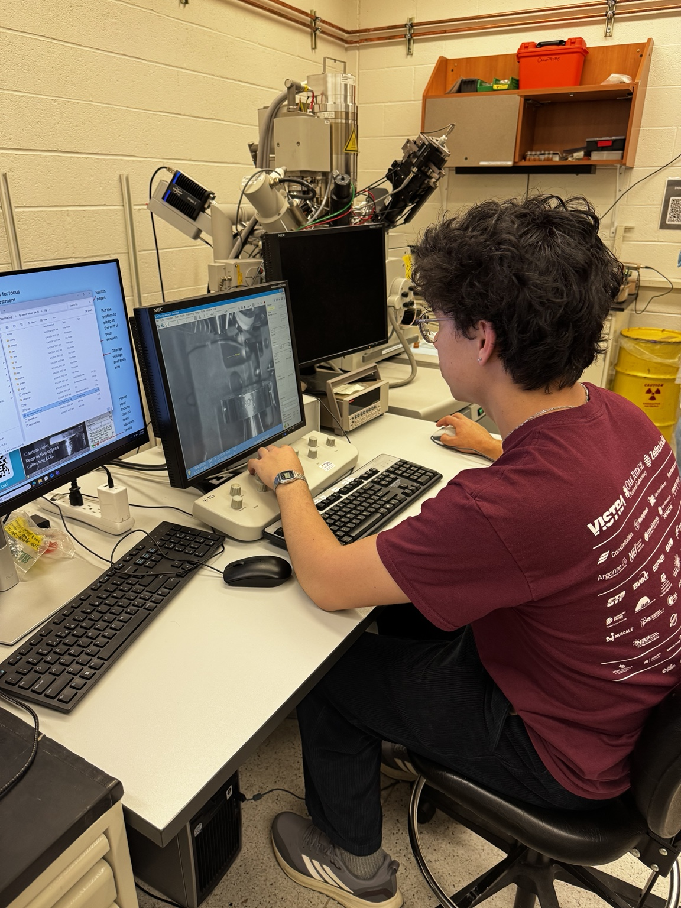
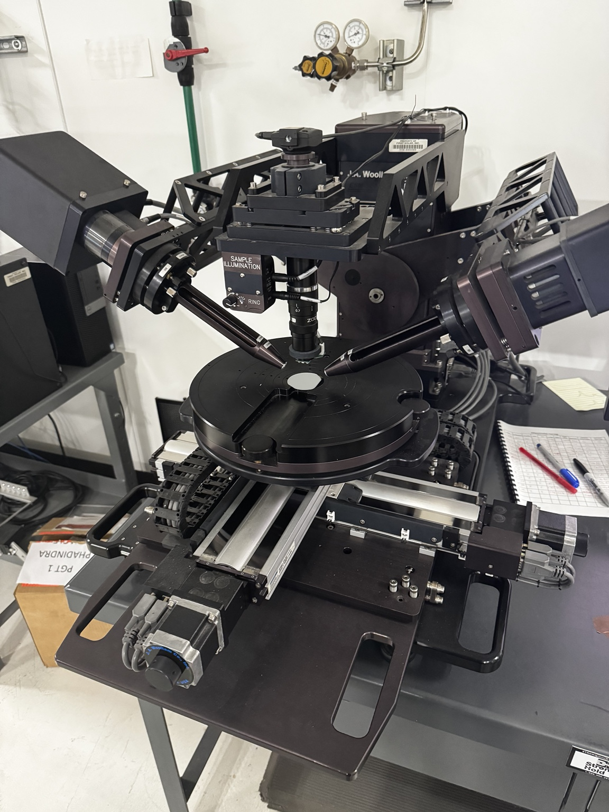

Research, student teams, and personal engineering projects.
NSF REU Internship · Idaho Falls
FLiNaK corrosion of LPBF 316L
Comparing additively manufactured stainless steel after high-temperature molten-salt exposure.
Read more →
My contribution
I designed and conducted glovebox immersion tests of as-built LPBF 316L at 700 °C, comparing specimens produced at two scan speeds. I used mass-change measurements, SEM, EDS, and XRD to evaluate the exposed material.
Building the sample-preparation system and studying how laser damage can affect fracture measurements.
Read more →
My contribution
I designed and built a laser-notching system for tungsten specimens. The optical path uses wave-plate and polarizing-beam-splitter attenuation, two alignment mirrors, and a focusing lens.
Optical alignment · Fracture testing · CAD
MEENA Group · mechanical testing

SEM characterization · MEENA Group
OSU · MEENA Group
Stable crack propagation in nuclear graphite
Preparing graphite specimens and developing fixtures for micromechanical fracture testing.
Read more →
My contribution
My work includes cutting, polishing, and notching graphite specimens, along with CAD design and 3D prototyping of sample-holder and bending fixtures for research conducted in partnership with Kairos Power.
I contributed to material characterization and analysis associated with UO₂ fission-gas release using STA, SEM, and XRD.
STA · SEM · XRD
OSU · AuYeung Group
Liquid thermochemical energy storage
Developing and testing storage systems that retain energy through chemical reactions.
Read more →
My contribution
I work on low-temperature liquid thermochemical energy-storage systems and reactor development. I also authored a successful $4,000 grant proposal to evaluate how TCES could reduce campus emissions.
Reactor development · Experimental testing · Grant writing

Thin-film characterization
First Solar · Fall 2026
Thin-film materials for perovskite solar cells
PVD process development and thin-film characterization.
Read more →
My contribution
My internship involves improving plasma-sputtered coating processes for perovskite solar cells, with metrology analysis using ellipsometry, AFM, XPS, WDXRF, and STEM.
PVD · Surface analysis · Thin-film metrology
Scientific software
Thin-film analysis tools
Developing a browser-based workspace for NiOₓ film and XPS analysis.
Read more →
My contribution
I am developing analysis interfaces to organize thin-film measurements and review XPS data, with attention to keeping measured quantities, fitting outputs, model estimates, and unknowns distinct.
Scientific interfaces · XPS analysis · Data review
NASA L’SPACE Mission Concept Academy
Lunar rover mission and PSR cable system
Leading a multidisciplinary mission-concept team and contributing to lunar-system requirements.
Read more →
My contribution
As Team 20 project manager, I lead a 20-member team developing a lunar rover mission to characterize electrostatic, plasma, and charged-regolith effects on surface power infrastructure. My technical work includes cable-system requirements and instrument traceability for permanently shadowed regions.
Systems engineering · Requirements · Team leadership
CHE 450 · Energy systems portfolio
Lunar reactor waste-heat recovery
Evaluating whether rejected reactor heat could support water-ice extraction.
Read more →
My contribution
I am developing an energy-systems analysis of transferring lunar surface reactor waste heat to water-ice extraction processes, connecting available heat, extraction demand, and system constraints.
Energy balances · Thermal systems · System trade studies
ANS Student Conference · 2026
Lessons from NERVA and materials constraints in NTP
Reviewing how historical nuclear-thermal propulsion experience informs current materials challenges.
Read more →
My contribution
I authored and presented a literature review on nuclear thermal propulsion, using NERVA experience and materials constraints to examine challenges for future systems.
Literature synthesis · Nuclear propulsion · Technical presentation
Independent research exploration
Radiation-protective garment panels
Assessing whether protective fibers could be useful in thin clothing panels for space environments.
Read more →
My contribution
I am investigating literature and computational approaches for evaluating radiation-protective fibers in fixed garment panels, including the importance of radiation type, areal density, and secondary particles.
Radiation transport · Evidence review · Feasibility analysis
Independent research exploration
Space-nuclear system modeling
Investigating analysis questions in nuclear-electric and nuclear-thermal propulsion.
Read more →
My contribution
My research exploration includes coupled power-conversion, radiator, and thruster trade studies for NEP and transient-operation questions for NTP. The goal is an original, verifiable engineering contribution.
System optimization · Verification · Sensitivity analysis
OSU AIAA
Solar-powered aircraft
Restarting and leading a student solar-aircraft project.
Read more →
My contribution
I serve as solar plane team lead and fundraising coordinator for OSU AIAA, supporting technical planning, team organization, and the resources needed to develop the aircraft.
Team leadership · Aircraft systems · Fundraising
OSU · HALE
Liquid-rocket development
Contributing to a student liquid-engine development and testing effort.
Read more →
My contribution
I participate in Oregon State’s High Altitude Liquid Engine team, supporting the broader effort to develop and test student-built propulsion hardware.
Propulsion hardware · Test support · Team engineering
Independent engineering design
Compact CNC mill
Developing a compact mill concept for metal machining.
Read more →
My contribution
My design study explores a fixed-column machine with approximately 16 × 12 × 12 inches of tool-tip travel, a BT30 spindle concept, position verification, and protected motion components. Safety and maintainability are part of the design scope.
Machine design · CAD · Motion systems
City of San Ramon
Water-retention curb standard
Turning infrastructure requirements into an adopted engineering standard.
Read more →
My contribution
During my civil-engineering internship, I used AutoCAD and GIS to support infrastructure work and developed a water-retention curb standard that was adopted for continued use.
AutoCAD · GIS · Engineering standards
Independent hardware
Split mechanical keyboards
Hands-on electronics, assembly, and custom input devices.
Read more →
My contribution
My personal hardware work includes wired and wireless Lily58 split-keyboard builds, combining microcontrollers, OLED modules, assembly, and soldering.